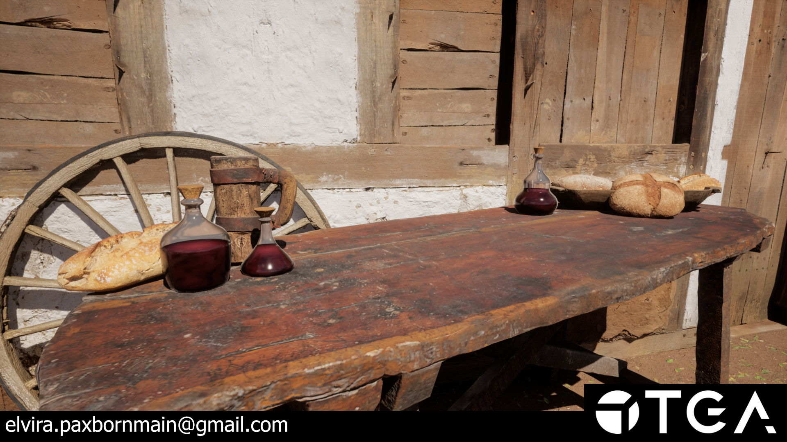
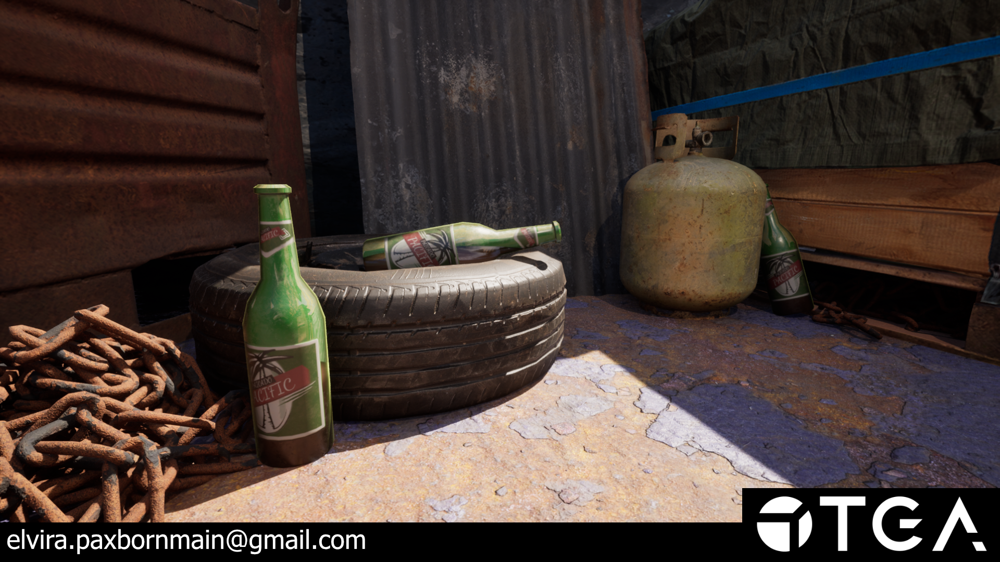
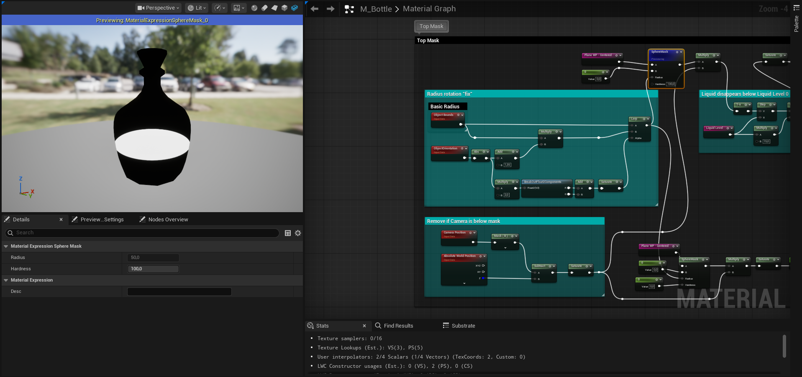
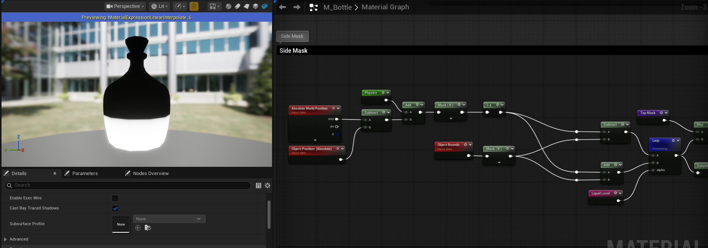
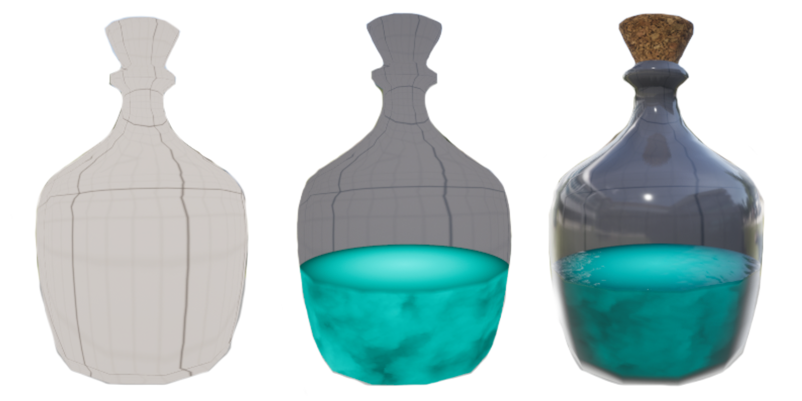
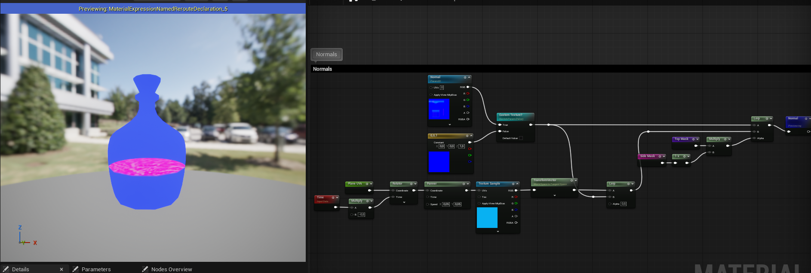
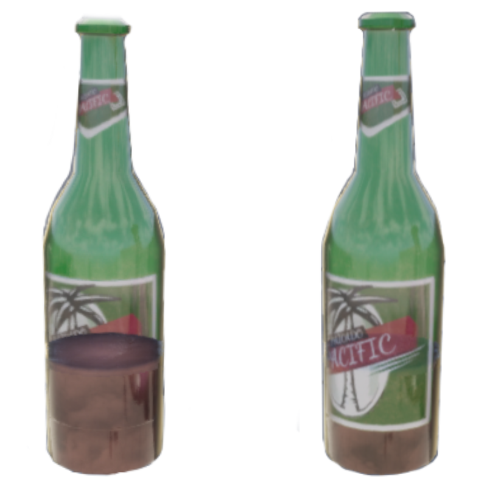

Bottle Shader +(Simple Bottle Tool)
My goal with this project was to make an opaque shader that mimics translucent bottles. The initial idea I had for this project was a bit simpler but after looking at bottles like the ones from Half-Life Alyx I wanted to try something similar.





The central plane of the bottle is created using a modified version of the unreal "VirtualPlaneCoordinates" node which I have gone into and tweaked a bit to make the UVs it outputs scale to my preference. I later mask off the output with the help of a spheremask that gets it radius input from looking at the object bounds and rotation, making it fit the bottle.
This isn't a flawless solution as it only accounts for round bottles.
The side mask is a bit simpler. I get it by subtracting the object position from the world position which gives me the middle of the bottle. I want to lerp through a filled bottle and an empty bottle with my liquid controller so I adjust this mask with the help of the blue channel from the object bounds. I add it to one output of the lerp while subtracting it from the other to create the filled and empty versions.


The central plane of the bottle also clips away when you view the bottle from below to prevent some funkyness with being able to see small parts of the central plane through the sidemask.
This is done by subtracting the Z channel from world position with the Z channel of camera position and then multiplying that into the central mask.
The material has a velocity parameter that recieves X and Y values from a blueprint through a dynamic material instance, so when you move a bottle the masks tilt to follow along.
The blueprint subtracts the current position of the object from the last one and multiplies it with delta time before adding it to the velocity to smooth the movement. When you release the bottle it lerps from this input back to 0,0,0 based on delta time multiplied by a recovery parameter, allowing you to change how quickly it goes back.



To create the illusion that the material is translucent I use a cubemap texture with unreals refraction node and then blend that with the color of the bottle through a lerp. To maintain the illusion you have to have a cubemap of the area where the bottles are placed, otherwise it will look a bit off.
Left picture is the refracted cubemap, middle is it blended with the color and right is the final output.
The normals are quite simple, for the central plane I use the UV output from the VirtualPlaneCoordinates node and add a texture of a water normal that is slightly panning and rotating. This is then lerped with the bottles normals to make it feel like the plane is inside of the bottle.


I also quickly added support for custom textures and tried it out on a bottle from a previous project I made.
At first it had some issues since the liquid mask didn't have a check to respect the labels of a custom texture. To fix this I just went into the material again and changed it so the liquid mask would also be multiplied by the textures alpha channel where I had masked off the labels.
If we look at the shader complexity we can see that the material is somewhat expensive but still cheaper compared to translucency. The translucent material I am using in this comparison is the unreal default with just a color input plugged in.

I also made a very simple bottle creation HDA for this project. It uses a graph as input for the bottle sillhouette, allowing the user to quickly and easily change it. Swapping between different interpolation modes for the points also lets the user play around with how sharp or smooth the bottle should be. It also has a few parameters like bottle height, cork width and target number of triangles.
I had a lot of fun with this project and am pretty happy with the result but if I could go back and work more on it I would like to take another look at how the central plane scales when it rotates since I believe my current solution could use improvement.